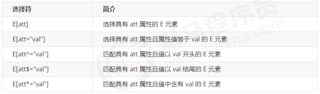
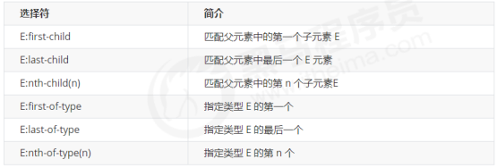
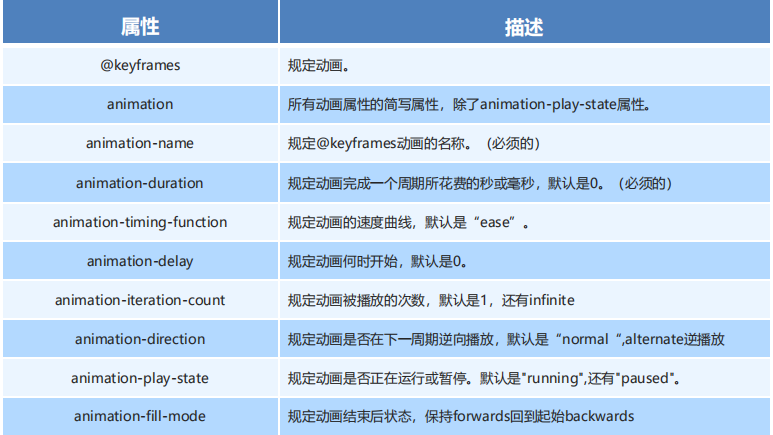
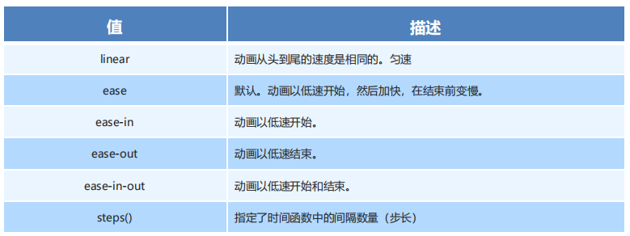
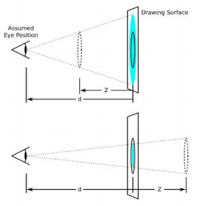
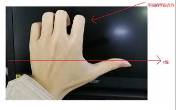
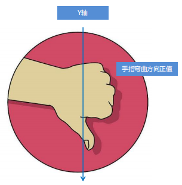

CSS3 的新特性
1、CSS3 的新特性
1.1 属性选择器
属性选择器可以根据元素特定属性的来选择元素。 这样就可以不用借助于类或者id选择器。

1.2 结构伪类选择器

nth-child（n） 选择某个父元素的一个或多个特定的子元素（重点）
1.3 伪元素选择器（重点）
1 | ::before 在盒子内部的前部插入 |
before 和 after 创建一个元素，但是属于行内元素
新创建的这个元素在文档树中是找不到的，所以我们称为伪元素
语法： element::before {}
before 和 after 必须有 content 属性
before 在父元素内容的前面创建元素，after 在父元素内容的后面插入元素
伪元素选择器和标签选择器一样，权重为 1
伪元素是孩子
1 | .tudou:hover::before { |
1.4 CSS3 盒子模型
CSS3 中可以通过 box-sizing 来指定盒模型，有2个值：即可指定为 content-box、border-box，这样我们计算盒子大小的方式就发生了改变。
box-sizing: content-box 盒子大小为 width + padding + border （以前默认的）
box-sizing: border-box 盒子大小为 width
1.5 CSS3 其他特性（了解）
1.5.1 CSS3滤镜filter:
filter CSS属性将模糊或颜色偏移等图形效果应用于元素。
1 | filter: 函数(); 例如： filter: blur(5px); blur模糊处理 数值越大越模糊 |
1.5.2 CSS3 calc 函数:
calc() 此CSS函数让你在声明CSS属性值时执行一些计算。
1 | width: calc(100% - 80px); |
2、CSS3 过渡（重点）
过渡写在本身上，谁做动画给谁加
经常用在 :hover 上
1 | transition: 要过渡的属性 花费时间 运动曲线 何时开始; |
1.属性 ： 想要变化的 css 属性， 宽度高度 背景颜色 内外边距都可以 。如果想要所有的属性都
变化过渡， 写一个all 就可以。
2. 花费时间： 单位是 秒（必须写单位） 比如 0.5s
3. 运动曲线： 默认是 ease （可以省略）
| 值 | 描述 |
|---|---|
| linear | 规定以相同速度开始至结束的过渡效果（等于 cubic-bezier(0,0,1,1)）。 |
| ease | 规定慢速开始，然后变快，然后慢速结束的过渡效果（cubic-bezier(0.25,0.1,0.25,1)）。 |
| ease-in | 规定以慢速开始的过渡效果（等于 cubic-bezier(0.42,0,1,1)）。 |
| ease-out | 规定以慢速结束的过渡效果（等于 cubic-bezier(0,0,0.58,1)）。 |
| ease-in-out | 规定以慢速开始和结束的过渡效果（等于 cubic-bezier(0.42,0,0.58,1)）。 |
4.何时开始 ：单位是 秒（必须写单位）可以设置延迟触发时间 默认是 0s （可以省略）
1 |
|
3、CSS3 提高
3.1 CSS3 2D转换
转换（transform）是CSS3中具有颠覆性的特征之一，可以实现元素的位移、旋转、缩放等效果
1. 2D转换之移动 translate
2D移动是2D转换里面的一种功能，可以改变元素在页面中的位置，类似定位。
1 | transform: translate(x,y); 或者分开写 |
translate最大的优点：不会影响到其他元素的位置
translate中的百分比单位是相对于自身元素的 translate:(50%,50%);
对行内标签没有效果
2. 2D 转换之旋转 rotate
2D旋转指的是让元素在2维平面内顺时针旋转或者逆时针旋转。
1 | transform:rotate(度数) 写在修饰的元素上 |
- rotate里面跟度数， 单位是 deg 比如 rotate(45deg)
- 角度为正时，顺时针，负时，为逆时针
- 默认旋转的中心点是元素的中心点
2.1 三角形
1 |
|
2.2 我们可以设置元素转换的中心点
1 | transform-origin: x y; |
注意后面的参数 x 和 y 用空格隔开
x y 默认转换的中心点是元素的中心点 (50% 50%)
还可以给x y 设置 像素 或者 方位名词 （top bottom left right center）
3.2D 转换之缩放scale
==不会影响到其他元素==
缩放，顾名思义，可以放大和缩小。 只要给元素添加上了这个属性就能控制它放大还是缩小。
1 | transform:scale(x,y); |
注意其中的x和y用逗号分隔
transform:scale(1,1) ：宽和高都放大一倍，相对于没有放大
transform:scale(2,2) ：宽和高都放大了2倍
transform:scale(2) ：只写一个参数，第二个参数则和第一个参数一样，相当于 scale(2,2)
transform:scale(0.5,0.5)：缩小
sacle缩放最大的优势：可以设置转换中心点缩放，默认以中心点缩放的，而且不影响其他盒子
3.2 动画
==不改变其他元素的位置==
制作动画分为两步：
先定义动画
再使用（调用）动画
1. 用keyframes 定义动画（类似定义类选择器）
1 | @keyframes 动画名称 { |
0% 是动画的开始，100% 是动画的完成。这样的规则就是动画序列。
在 @keyframes 中规定某项 CSS 样式，就能创建由当前样式逐渐改为新样式的动画效果。
动画是使元素从一种样式逐渐变化为另一种样式的效果。您可以改变任意多的样式任意多的次数。
请用百分比来规定变化发生的时间，或用关键词 “from” 和 “to”，等同于 0% 和 100%。
2. 元素使用动画
1 | div { |

3 动画简写属性
animation：动画名称 持续时间 运动曲线 何时开始 播放次数 是否反方向 动画起始或者结束的状态;
1 | animation: name duration timing-function delay iteration-count direction fill-mode; |
4 速度曲线细节
animation-timing-function：规定动画的速度曲线，默认是“ease”

5 animation-delay 属性..
规定动画何时开始。默认是 0。
6.animation-iteration-count 属性
| 值 | 描述 |
|---|---|
| n | 一个数字，定义应该播放多少次动画 |
| infinite | 指定动画应该播放无限次（永远） |
7.animation-direction 属性
是否反方向播放
| normal | 默认值。动画按正常播放。 |
|---|---|
| reverse | 动画反向播放。 |
| alternate | 动画在奇数次（1、3、5…）正向播放，在偶数次（2、4、6…）反向播放。 |
| alternate-reverse | 动画在奇数次（1、3、5…）反向播放，在偶数次（2、4、6…）正向播放。 |
8.animation-fill-mode
| 值 | 描述 |
|---|---|
| forwards | 在动画结束后，停留在结束状态 |
| backwards | 默认值，回到起始状态 |
3.3 3D 转换
transform
1 3D移动 translate3d
3D移动在2D移动的基础上多加了一个可以移动的方向，就是z轴方向。
- translform:translateX(100px)：仅仅是在x轴上移动
- translform:translateY(100px)：仅仅是在Y轴上移动
- translform:translateZ(100px)：仅仅是在Z轴上移动（注意：translateZ一般用px单位）
- transform:translate3d(x,y,z)：其中 x、y、z 分别指要移动的轴的方向的距离
2 透视 perspective（近大远小）
==透视写在被观察元素的父盒子上面的==
d：就是视距，视距就是一个距离人的眼睛到屏幕的距离。
z：就是 z轴，物体距离屏幕的距离，z轴越大（正值） 我们看到的物体就越大。

3 translateZ
translform:translateZ(100px)：仅仅是在Z轴上移动。
有了透视，就能看到translateZ 引起的变化了
translateZ：近大远小
translateZ：往外是正值
translateZ：往里是负值
4 3D旋转 rotate3d
3D旋转指可以让元素在三维平面内沿着 x轴，y轴，z轴或者自定义轴进行旋转。
transform:rotateX(45deg)：沿着x轴正方向旋转 45度
transform:rotateY(45deg) ：沿着y轴正方向旋转 45deg
transform:rotateZ(45deg) ：沿着Z轴正方向旋转 45deg
transform:rotate3d(x,y,z,deg)： 沿着自定义轴旋转 deg为角度（了解即可）
左手准则
左手的手拇指指向 x轴的正方向
其余手指的弯曲方向就是该元素沿着x轴旋转的方向

左手的手拇指指向 y轴的正方向
其余手指的弯曲方向就是该元素沿着y轴旋转的方向（正值）

transform:rotate3d(x,y,z,deg)： 沿着自定义轴旋转 deg为角度（了解即可）
xyz是表示旋转轴的矢量，是标示你是否希望沿着该轴旋转，最后一个标示旋转的角度。
transform:rotate3d(1,0,0,45deg) 就是沿着x轴旋转 45deg
transform:rotate3d(1,1,0,45deg) 就是沿着对角线旋转 45deg
5 3D呈现 transfrom-style
控制子元素是否开启三维立体环境。。
transform-style: flat 子元素不开启3d立体空间 默认的
transform-style: preserve-3d; 子元素开启立体空间
代码写给父级，但是影响的是子盒子
这个属性很重要，后面必用
- 先移动后旋转
 wechat
wechat alipay
alipay


.png)